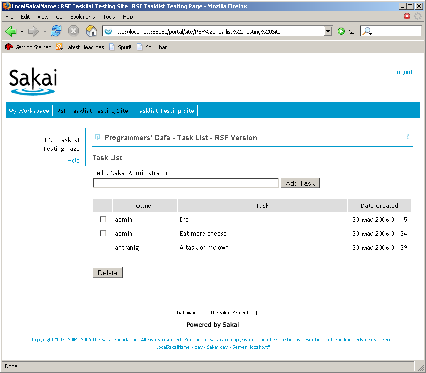

{kind=link}
{kind=link}
{kind=link}
This page describes a port of the "TaskList" sample (originally in JSF) from the Sakai Programmers' Cafe held at Vancouver in May 2006 -
The original JSF version from which it was taken is in Sakai contrib SVN at https://source.sakaiproject.org/contrib/programmerscafe/trunk/tasklist-simple/.
held at Vancouver in May 2006 -
The original JSF version from which it was taken is in Sakai contrib SVN at https://source.sakaiproject.org/contrib/programmerscafe/trunk/tasklist-simple/.
rsf-task-list is held in saffron SVN at https://saffron.caret.cam.ac.uk/svn/projects/SakaiRSFSamples/trunk/TaskListRSF.
Contrasts to JSF version#
The contrasts with the JSF version are quite interesting - and were slightly unexpected.
TaskListService abolished#
The key knock-on difference to the JSF version is the entire abolition of one of the TaskList APIs, the "TaskListService" and along with it "TaskListServiceImpl". These "APIs" were in fact designed with the 'internal' use of the JSF system in mind, and with the fully Spring-configured ViewProducer in RSF they are not actually necessary at all. Most of the Spring dependencies on TaskListServiceImpl have been transferred onto TaskListProducer.
TaskBeanWrapper abolished#
Another very pleasant difference is the abolition of the "TaskBeanWrapper" class, which is a piece of tedium required by the JSF table model. Since JSF requires the contents of tables to be hosted within objects under its own management, this wrapper was required to answer queries from JSF about the selected and deletable status of the Task items. Since in RSF there is no table model and no behaviour, the table models are simply rendered in sequence in the Producer.TaskListBean drastically slashed#
The final most important difference is the extreme slimming of the TaskListBean - this now only contains the two core methods necessary to service action requests, processActionDelete and processActionAdd. In particular this bean is now a "proper bean" since it is free of framework dependence - the bulky JSF "ListDataModel" object is gone. In fact this bean is so slim it is also free of Sakai dependence (this is not necessary, or perhaps even specifically desirable, but it proved neater to inject most of its dependencies into it from the ViewProducer, across the request boundary).Pure HTML templating#
Naturally, the RSF version is also free of the original "TaskList.jsp" JSP which was responsible for defining the view contents, with instead the pure HTML template "TaskList.html". This was generated by simply getting the original TaskList JSF tool to render a sample view, saving the HTML and cleaning it up. It's worth noting that there was quite a bit of cleaning to do - in particular, the output of JSF renderers doesn't even make a pretence at being valid XML, and contained all sorts of undesirable and unexpected Javascript necessary to operate both the form submission and the state of the selection controls.Server state#
A difference less easy to see is that the RSF version is considerably more economical on server resources than the JSF version. You'll notice that the entire list of TaskList objects rendered in the original view *must be persisted* in the JSF session until the deletion request is received - since these are also Hibernate entities, there isn't even the option to put them in a client form or any other server-side serialised state. They must hang around in memory until the user's session closes!!Summary#
In general, the RSF version is easier to write, understand and maintain (uses familiar "for" loops for generating objects, and JDK DateFormat objects rather than taglibs), is more flexible as a result of HTML templating and is more efficient. Go for it!Screenshot#
Here is a screenshot of the final app running in Sakai (version 2.2, from a May vintage trunk) - it looks and behaves identically to the JSF version (although it uses no Javascript in the interface - the fact you don't notice this being missing proves it was unnecessary in the original :P)
Notes#
Since the ViewProducer here uses a UISelect control, there's the possibility to get the TaskList deletion selection rendered by using an HTML <select> multiple selection control, just by changing the template - try this out by altering the <span> tag peering with "delete-select" and commenting out the table body in the HTML template - compare with the ComponentTest app for an example.OTP version#
The version described above was a straight rewrite of the JSF version, disturbing as little of the app structure as possible. Although it made use of Hibernate (through a DAO), tasklist-rsf did *not* use RSF's Hibernate integration library. Rewriting the app even further into the native RSF ORM idiom, "OTP" causes even more of the code to fall away, in particular the "action bean" TaskListBean is no longer required, replaced instead by a couple of EL bindings issued in the view producer. Naturally the DAOs and associated interfaces also disappear.
The OTP version is held in SVN at https://saffron.caret.cam.ac.uk/svn/projects/SakaiRSFSamples/trunk/TaskListRSF-OTP - again, please use tagged versions for your builds!
The "business logic" of this app reduces to the single line which checks whether the name of the task is empty, and if so rejects the submission. In RSF this is cast naturally as a Validator, expressed in terms of a BeanGuard - in this case, we will use the POJO variety, creating a tiny class, TaskTransit[1] as follows:
public class TaskTransit {
private Task task;
public void setTask(Task task) {
if (task.getTask() == null || task.getTask().equals("")) {
throw new IllegalArgumentException("Task name cannot be empty");
}
task.setCreationDate(new Date());
this.task = task;
}
public Task getTask() {
return task;
}
}
We configure this guard into the container by writing a "writeGuard" definition as follows, at application scope:
<bean parent="writeGuardParent">
<property name="guardedPath" value="Task.*"/>
<property name="guardProperty" value="taskTransit.task"/>
</bean>
RSFUtil.addTransitBinding(newtask.parameters, "#{newtask}",
"#{taskTransit.1.task}", "#{Task.new 1}");
where the body of addTransitBinding is
public static void addTransitBinding(ParameterList paramlist,
String source, String transit, String dest) {
paramlist.add(new UIELBinding(transit, new ELReference(source)));
paramlist.add(new UIELBinding(dest, new ELReference(transit)));
}
Add new attachment
List of attachments
| Kind | Attachment Name | Size | Version | Date Modified | Author | Change note |
|---|---|---|---|---|---|---|
png |
sakai-rsf-tasklist.png | 35.8 kB | 1 | 19-Jul-2006 09:36 | AntranigBasman |
{kind=link}
{kind=link}
Documentation
Developers
Javadocs
Designers
Sample RSF Apps
Presentations
Acronyms
Downloads
Current Release
Trunk
Distributions
Old Versions
Community
Q&A
Forums
Mailing Lists
Issue Tracker
People
Design
Roadmap
Integrations
Concepts
Philosophy